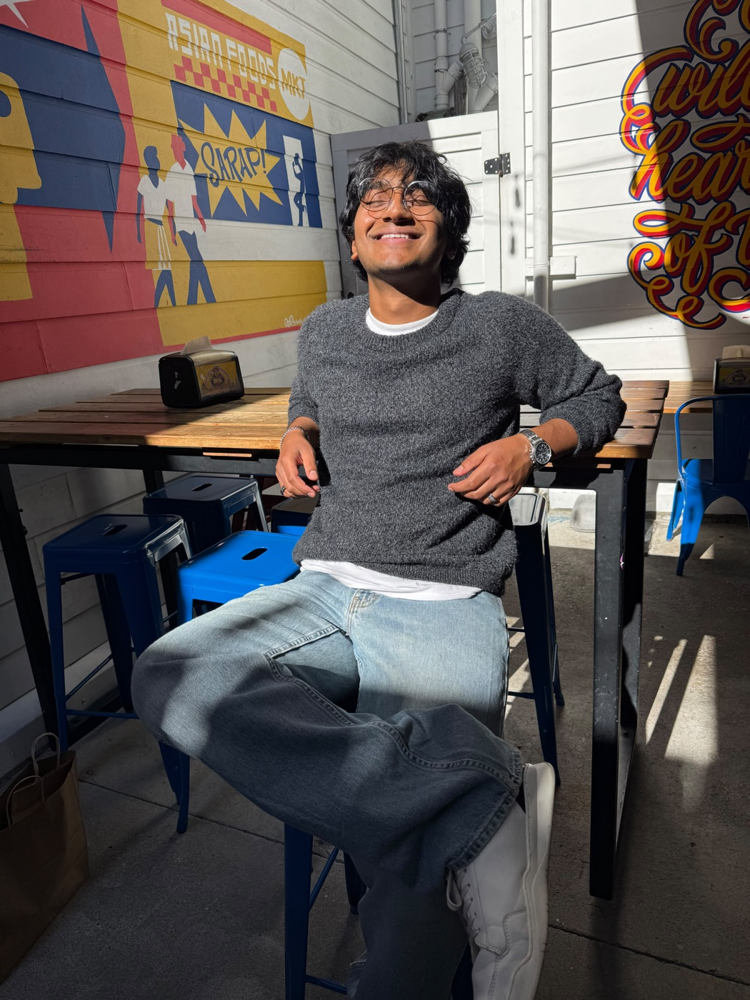
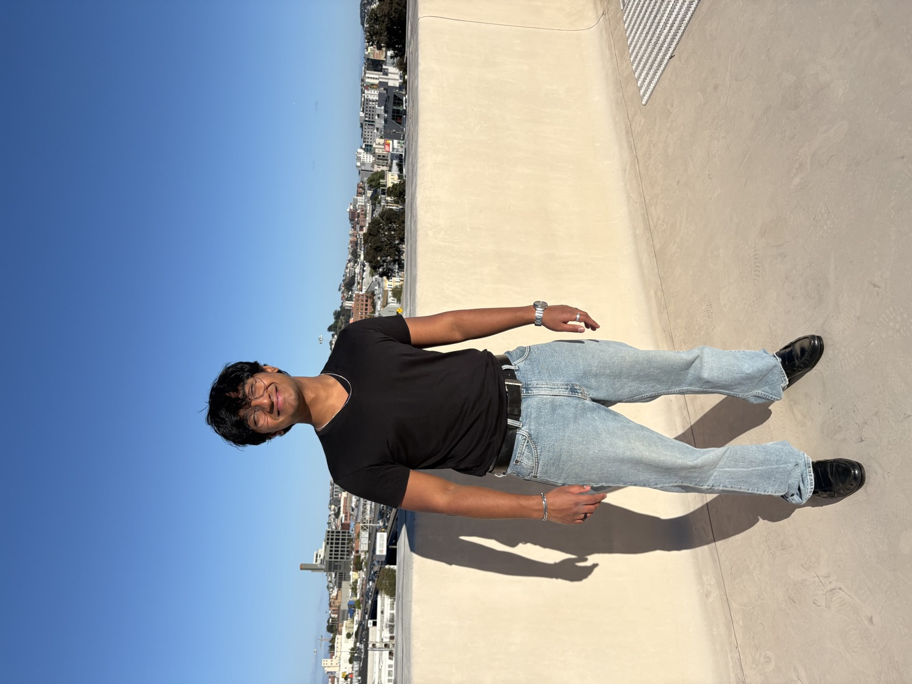
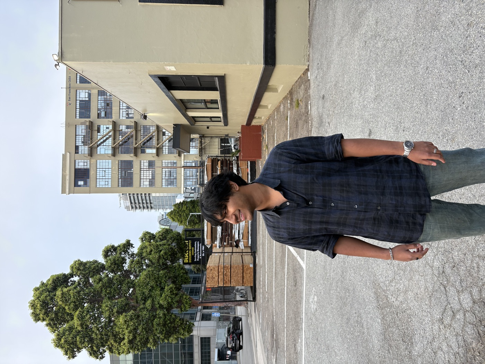
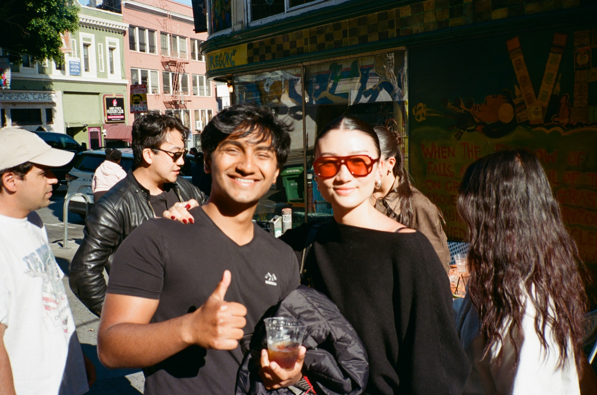

Hello, welcome to my date me doc! The purpose of this doc is both to show you, dear
reader, what you could expect from a relationship with me, and what I value in a
relationship.
I’m Akshay, 25, a founder in SF working on AI safety talent. I greatly value human
connection and am looking to connect with people on a deep level, short-term or
long-term, but with intent to find a long-term partner who is amazing :))
A few photos of me in my natural state:




What am I like in real life?
(Some of this is an honest self-report so take it with a grain of salt!)
How I am as a person
My baseline happiness is quite high, usually a 9 or a 10! I’m very chill in general
and like to make many jokes :))
Some of my previous partners and close friends have described me as kind, emotionally intelligent, golden-retriever-like, intense, and earnest.
I think deeply about the world, institutions, how to live well, happiness, relationships.
I’d say I’m very competent, if I say I’ll do something, it gets done and you can count on me!
Relationships and friendships to me are much more about emotional closeness than intellectual compatibility. I feel a deep desire to understand in detail the inner world and conscious experience of the people I love the most.
Work and life trajectory
I grew up in Mumbai, went to IIT Bombay and then Columbia, and moved to SF right after to build a company. (I was a huge olympiad and exam nerd growing up!)
I’m working on Polymath, which helps find and place people who can do important work in AI safety.
I decided to spend the next few years on work I think really matters for the world, even if it means less money and status for a while. (For the longest time I thought I would build a huge company, but I realised that my counterfactual impact will be much higher in AI safety and it’s much more urgent for the world.)
Most of my friends are in the AI safety and EA world, and you’ll usually find me at Mox, a co-working space in SF.
Things that bring me joy
Simple things: I love experiencing the simple things the world has to offer. Drinking some coffee in the sun, going to the beach, going to a street festival, a jazz concert, hiking at Point Reyes. And experiencing this in a chill, laid back way, without stressing about things.
Art and people: I love appreciating art and museums. I love understanding different stories of humans, seeing the beauty in people.
Music: I love music, and make music myself! I sing, play the piano and guitar, and do music production. I also put out song covers! Listening to music and lyrics and feeling the emotions deeply brings me intense joy.
Meditating: I love meditation, understanding my own conscious experience, feeling more viscerally the teachings of Buddhism/Vedanta philosophy, and feeling at one with the world.
Reading: I love to read and read a lot! Biographies, mental models, ways the world succeeds or fails, predicting the future better. I listen to audiobooks every time I’m in the gym or travelling, this is not out of curiosity though, more from a place of wanting to get more competent at helping the world.
What does a week with me look like?
Day to day
I’ll work during the day and be very present in the evenings. (This is something I have actively worked on super hard: context switching so I’m fully present with my loved ones.)
Weekends with me will be going to the movies, or walking in the park with some coffee, or going to the beach. It will be very laid back and chill, probably a lot of joking, no fixed plan, going where the flow takes us.
You will find me asking you about your work and day with great interest, asking about your emotions and how you feel.
In disagreements
I don’t get angry. I like to validate my partner’s emotions before jumping to solutions.
I’ll tell you honestly if something hurts me, and you will feel a lot of love both during and after the disagreement.
I like to take some time to think to myself about potential solutions, the crux of our disagreement, and how to best solve it, before I come back and talk about it. It’s important to me that I don’t say anything wrong or hurtful because I don’t know what I am feeling yet.
How I love
I would say I am a giver. I love making my partner happy and try to give everything I can!
I open up about my emotions and want my partner to be vulnerable about their emotions with me too, authentic connection and vulnerability is really important to me!
It comes easily to me because I’m a pretty happy person by default, so I usually have a full cup to pour from.
What am I looking for?
Someone who is kind, considerate, and giving. The ideal relationship to me is where both people give everything they can and both people feel super cared for.
Someone calm and emotionally steady. I’m at my happiest with someone I can completely relax around, and who can completely relax around me.
Someone with a rich inner world. I love art, I love understanding things, I love seeing the world through someone else’s eyes! If you’re enthusiastic about life, love freely, and are interested in many things, we will get along super well.
Honest flaws
I’ve been called intense. If you really like your space in a relationship, I might be a lot!
I need time to process. In hard conversations I sometimes go quiet for a bit before I can talk about it properly. I’m not shutting you out, I just want to understand what I’m feeling before I say anything, I’ll always come back to it!
I can get very in my head about relationships. I think a lot about whether things are right, sometimes more than I need to. I’m working on trusting what I feel, trusting my future self to make the right calls, and just enjoying things as they are.
How to reach out
Email me at akshaygiyer@gmail.com! Tell me a
bit about yourself and one thing that’s been on your mind lately. And if you’re a
friend and know someone who’d be a great fit, I’d love an intro :))